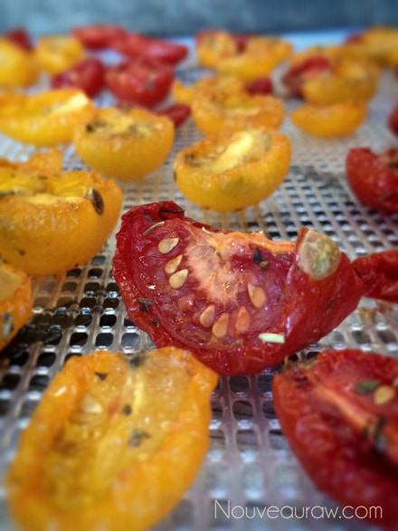
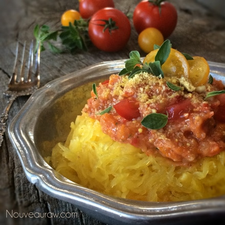

Italian Tomato Spaghetti with Noodle Squash
~ raw, vegan, gluten-free ~
The spaghetti squash also is known as; vegetable spaghetti, noodle squash, vegetable marrow, spaghetti marrow, and spaghetti. It is an oblong winter squash. The fruit (yep it is considered a fruit due to the seeds within) can range in color from ivory to yellow to orange. The orange varieties have a higher carotene content.
The center of the squash contains large seeds, and the flesh is bright yellow or orange. When raw, the flesh is solid and similar to other raw squash, but when cooked, the flesh falls away from the fruit in ribbons or strands like spaghetti.
The center of the squash contains large seeds, and the flesh is bright yellow or orange. When raw, the flesh is solid and similar to other raw squash, but when cooked, the flesh falls away from the fruit in ribbons or strands like spaghetti.
I don’t eat raw spaghetti squash because it is hard on my digestive system, so I baked mine for this recipe. If you want the dish to be 100% raw, zucchini noodles would be a perfect substitution.
Preparing it baked might make it a great transitional dish for you or your family members who are learning to add fresh, whole food recipes into the diet plan. A great benefit to spaghetti squash verses traditional pasta it that it only has 40 calories and 8 grams of carbs per cup, whereas traditional pasta that has 200 calories and 40 grams of carbs per cup!
I also did a little dehydration step when making the sauce. I started off by lightly dehydrating the cherry tomatoes once they were tossed with some olive oil and Italian seasoning. I did this for several reasons. One, to infuse the flavors, making them brighter and richer. And secondly, to cut down on the “water” in the sauce. If you are used to making raw marinara sauces, you know what I mean. Raw tomatoes can expel quite a bit water once the sauce is assembled and waiting for dress rehearsal. :) The end result was dyno-mite.
For a little dash of cheese flavor, I threw a handful of almonds and a teaspoon of nutritional yeast in my Bullet and blitzed it to a crumb-like texture. This was sprinkled on top in place of parmesan cheese. For a more complete recipe, you can always make my Brazil Nut “Cheese” Crumble or the Raw Almond Parmesan. For another tomato-based marinara type sauce, you can check out my Raw Cherry Tomato Marinara Sauce too. Enjoy!
Italian tomatoes:
- 3 cups cherry tomato (red & yellow)
- 1 Tbsp cold-pressed olive oil
- 1 tsp Italian seasoning
Sauce: yields 2 cups
- 1 1/4 cups Italian tomatoes
- 1 cup cherry tomato (I used yellow)
- 2 Medjool dates, pitted
- 2 Tbsp lemon juice
- 1 large cloves garlic
- 1 Tbsp dried oregano / 1 tsp fresh oregano
- 1 Tbsp cold-pressed olive oil
- 1/4 tsp onion powder
Noodles:
Preparation:
Italian tomatoes:
- Slice the cherry tomatoes in half. I used both red and yellow tomatoes. Place in a medium-sized bowl.
- Toss the tomatoes with olive oil and seasoning.
- Place the tomato halves, skin side down, on the mesh sheet that comes with the dehydrator.
- Dry at 115 degrees for 4-6 hours. The goal is to remove the moisture but not fully dehydrate so keep an eye on them. Your dry time may differ depending on the machine, how full it is, and humidity in the air.
Sauce:
- Process in a food processor combine the lightly dehydrated tomatoes, fresh tomatoes, dates, lemon juice, garlic, oregano, olive oil and onion powder. Process until chunky or smooth… you decide. Taste test and adjust seasoning to your liking.
Noodles:
- Preheat oven to 375 degrees (F) and halve squash lengthwise. Remove the seeds from the middle of each half.
- Arrange squash in a 9×13-inch casserole dish, cut sides down. Pour 1/2 cup water into the dish and bake until just tender, 30 to 35 minutes.
- Once the squash is done, using a fork, loosen the ’spaghetti’ strands from the inside of the squash, scraping them into a bowl or plate.
- Place the “noodles” in a colander and let it rest for about 15 minutes, letting the water drain from the squash. There is quite a bit of water within the veggie. You can skip doing this if you serve up your dish and eat right away. But if you serve the dish up and it sits for sometime before serving, the water from the squash will pool and make your sauce watery.


© AmieSue.com